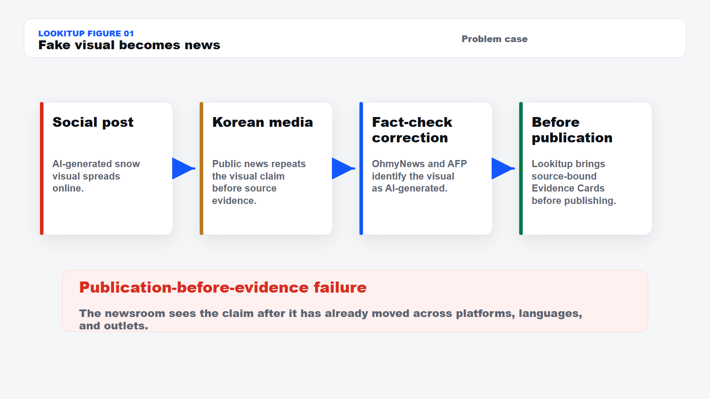
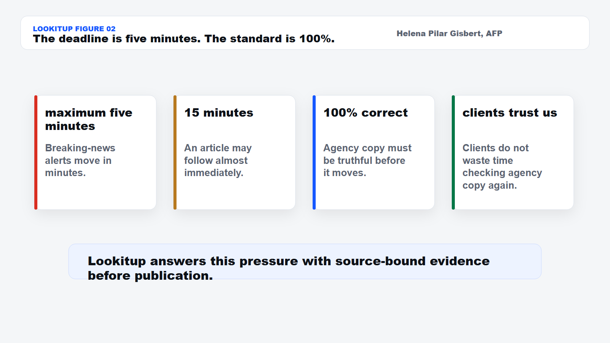
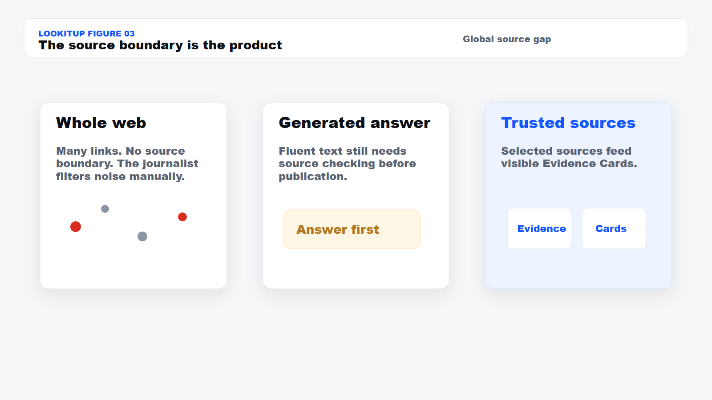
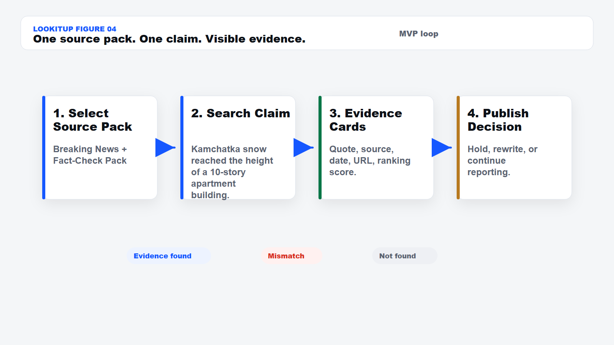
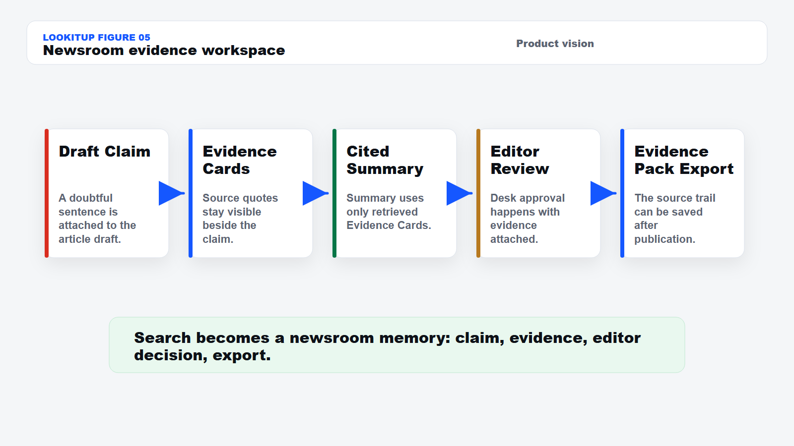
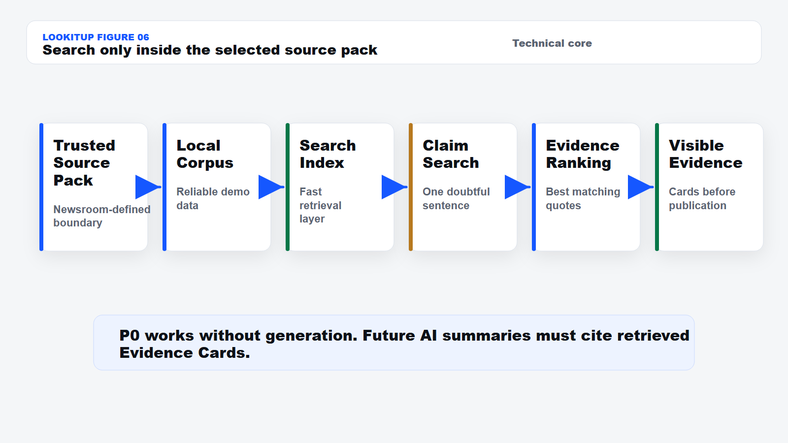

Lookitup
A trusted-source evidence workspace for journalists before publication.
Problem case
The Kamchatka snow story shows the failure: a vivid AI-generated claim crossed platforms and newsrooms before the evidence trail was checked.

Journalist pressure

Figure 2. Panel pressure: fast alerts, fast articles, full trust.
Source gap

Figure 3. Lookitup narrows verification to trusted sources.
Solution
The product does one thing on stage: it finds source-bound Evidence Cards for one doubtful claim.

Live demo
OhmyNews Fact Check
OhmyNews follow-up
AFP Fact Check
Local fallback corpus
Demo result
Korean media reported AI-manipulated Kamchatka snow visuals as real.
OhmyNews Fact Check · Jan. 22, 2026
KBS and MBC later deleted related AI snow videos.
OhmyNews follow-up · Jan. 23, 2026
Massive Kamchatka snow footage circulating online was AI-generated.
AFP Fact Check · Jan. 29, 2026
Decision: Hold before publishing.
Newsroom vision
Claims, sources, summaries, and editor decisions stay attached before publication.

Figure 5. The source-pack search loop grows into newsroom workflow.
Technical core
P0 works without generation. Future AI summaries must cite retrieved Evidence Cards.

Figure 6. Controlled retrieval makes the source boundary visible.
KPI and roadmap
Close
One claim. One trusted source pack. Visible Evidence Cards.
Moon Geonho · Oh Sowon · So Chanyoung · Lucas Boucher